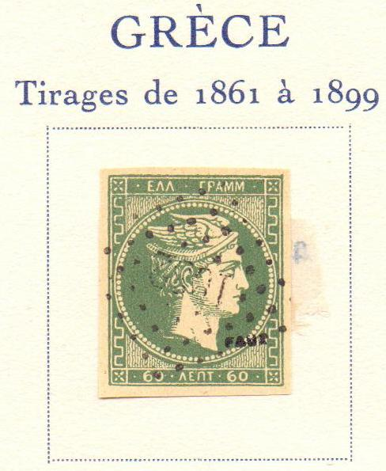
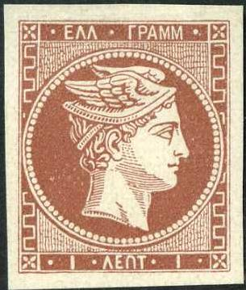
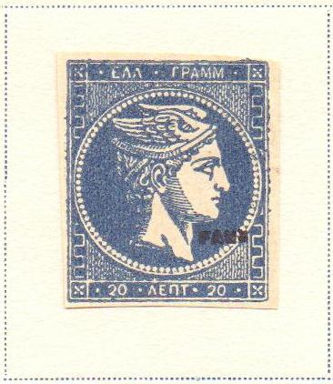

{kind=link}

Return To Catalogue - Greece - Greece Large Hermes Head forgeries, part 1 - Greece Large Hermes Head forgeries, part 2; Alisaffi, Oneglia and Sperati - Greece Large Hermes Head forgeries, part 4; Imperato
Note: on my website many of the
pictures can not be seen! They are of course present in the
catalogue;
contact me if you want to purchase the catalogue.

Forged stamp as taken from the Fournier Album


Unfinished Fournier forgeries.

Some forged overprints as they can be found in 'The Fournier
Album of Philatelic Forgeries'

Fournier forgeries with forged cancels (reduced sizes). The first
Fournier forgery has the cancel 'PAEOI
1 NOEM 75 *', this cancel was often used by Fournier on these
forgeries. Other cancels were also used: 'PGOSTOLION 3 IOGL. 77
(110)', see 'The Fournier Album of Philatelic Forgeries'.
Possibly other cancels were also used.

Fournier forgeries taken from a Fournier Album. The
"1032" numeral cancel of the 60 c value was also used
for Fournier forgeries of France.
Some forged Fournier cancels, obtained from a 'Fournier Album of
Philatelic Forgeries', the first cancel was used for Serbia.


Fournier forgeries with the above shown cancels.



In my view, the small dots in the vertical lines of the
background make some very typical patterns in the Fournier
forgery of the 1 l.


The cancel on the first forgery, a pattern of dots with an empty
center, is listed under France in the Fournier Album, but was
here used on a forgery of Greece. I do not know the
distinguishing characteristics of the 2 l Fournier forgery.


5 l Fournier forgery from the Fournier Album with
"FAC-SIMILE" printed at the back.


In my view, the 10 l Fournier forgery has a break in the bottom
left corner.


In all the 20 l Fournier forgeries I have seen, the vertical
lines above the left "20" do not go far enough to the
top, thus leaving a rather large white space just below the
central circle. Also note the "1032" numeral cancel.

In my view in the 30 l Fournier forgereis, the "30"s
are done quite differently from the genuine stamps. In all the 30
l Fournier forgeries I have seen there is a break in the upper
left corner.


Most likely a Fournier forgery with "FAUX" overprint.
In my opinion, the 60 l Fournier forgeries always have a small
upward extension in the upper right hand corner. Also two stamps
taken from a Fournier album, with a Paeoi cancel and a
"1032" cancel.


In my view, all the 80 l Fournier forgeries have a break in the
upper left corner (just next to the corner cross).

(I've been told that this is also a Fournier forgery, I have no
further information)

20 c forgery found in a Fournier Album, this is actually an Alisaffi forgery.


Possibly Fournier forgeries, although the cancel does not appear
in the Fournier Album.
{kind=link}
{kind=link}